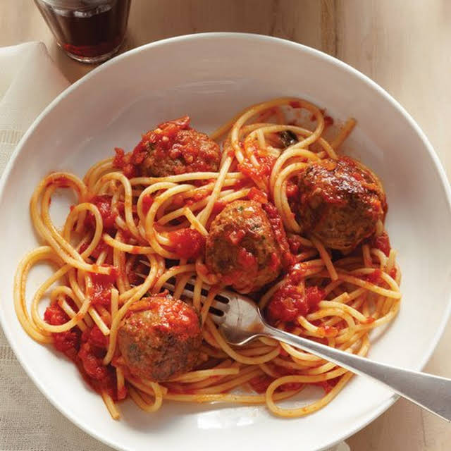

Hendris' Favorite Dish
The Recipe

You will need:
| Ingredients | Amount |
|---|---|
| Lean (at least 80%) Ground Beef | 1 lb |
| Bread Crumbs | 1/2 cup |
| Milk | 1/4 cup |
| Salt | 1/2 teaspoon |
| Worcestershire Sauce | 1/2 |
| Pepper | 1/4 |
| Small onion, Finely Chopped | 1 |
| Egg | 1 |
Making the meatballs:
- Heat oven to 400°F. Line 13x9-inch pan with foil; spray with cooking spray.
- In large bowl, mix all ingredients. Shape mixture into 24 (1 1/2-inch) meatballs. Place 1 inch apart in pan.
- Bake uncovered 18 to 22 minutes or until temperature reaches 160°F and no longer pink in center.
- Enjoy!